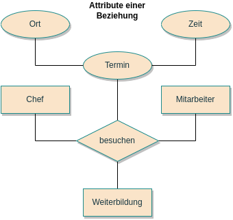
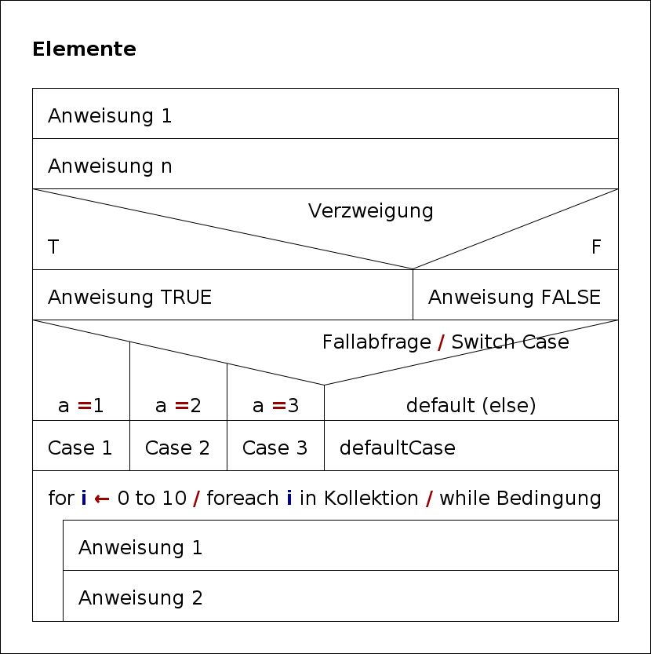

Entity-Relationship-Modell
Das ERM ist ein Modell(zur Darstellung) von Dingen, Gegenständen, Objekten (= ‘entities’) und der Beziehung/Zusammenhängen zwischen diesen (= ‘relationship’). Es dient dazu, im Rahmen der semantischen (abstrakt, formale Beschreibung / Darstellung eines Ausschnittes) Datenmodellierung vereinfacht darzustellen.
TOP # SQL-Datenbankdarstellung Darstellung in vielen SQL-Datenbankensystemen um die Beziehungen zwischen den bestehenden Tables darzustellen Darstellung wie Datenbank tatsächlich modelliert wird mit PK,FK, ggf auch Datentypen
Vereinfachte Dartsellung von Entitäten und Attributen mit Kardinalitäten
ER Modell nach Chen Elemente
ER Chen Beisspiel 1 
ER Chen Beisspiel 2

TOP # Anwendungsentwicklung ## Struktogramm Nassi-Schneidermann-Diagramm
Struktogramm Elemente 
Struktogramm Beisspiel 
Programmablaufplan
Ein Programmablaufplan ist ein Ablaufdiagramm für Computerprogramme, dass auch als Flussdiagramm oder Programmsturkturplan bezeichnet wird. Grafische Umsetzung eines Algorithmus
PAP-Elemente
PAP-Beisspiel
TOP # UML unified modeling language
UML Klassendiagramm-elemente 
UML Klassendiagramm-beisspiel-1 
UML Klassendiagramm-beisspiel-1 
UML Anwendungsdiagramm-elemente-1
UML Anwendungsdiagramm-elemente-2
UML Anwendungsdiagramm-elemente-3 
UML Anwendungsdiagramm-beisspiel
TOP # EPK ereignisgesteuerte Prozesskette
Die EPK ist eine grafische Modellierungssprache zur Darstellung von Geschäftsprozessen einer Organisation / Geschäftsmodellierung / Darststellung der Prozessorganisation (Abläufe + Arbeitsschritte)
EPK-Elemente 
EPK_Beisspiel 
TOP # Entscheidungstabelle Alle Möglichkeiten werden mittels Bedingung -> Aktion erfasst. Bei 3 Aktionen gibt es 2^3 Möglichkeiten
Entscheidungstabelle